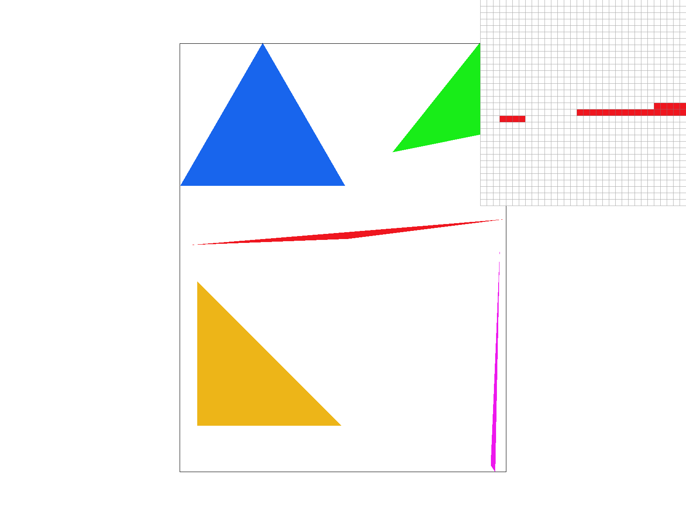

CS 184: Computer Graphics and Imaging, Spring 2018
Project 1: Rasterizer
Mod Yensuang & Noppapon Chalermchockchareonkit, CS184-team1
Overview
Rasterizer is a program that renders images from svg files, and the svg files, in the scope of this project, build images from traingle polygons. The project covers different essences of the rasterizer, from creating a naive single-colored triangle, to applying transformations, and to texturizing images using Barycentric Coordinate Interpolation and Mipmap. Each part teaches us the underlying technqiues to implement each of the functionalities as well as invokes us to think of ways to improve upon the functionalities further.
What we found interesting and got a lot out of from this project is the image redering pipeline, for examples concepts such as storing color of the pixels in a supersampling buffer before translating them to the target frame buffer. Getting our hands on the topics learned in class really helped us consolidate our understandings, and we truly learned a lot from this project.
Section I: Rasterization
Part 1: Rasterizing single-color triangles
I rasterized triangles by using the point-in-triangle three line test. I check if a point is in the triangle by checking if it is on the inside of ALL three lines (check if >0). I ensured my algorithm is no worse than checking each sample within the bounding box of the triangle by constructing a bounding box and only performing tests for points inside that bounding box.
One issue I encountered was that some triangles had points that were clockwise-oriented, while others were counter-clockwise. To resolve this, I made sure to make them all clockwise. I did so by checking if their 3x3 det were <0, and if so, swap two points.

Figure 1: basic/test4.svg with the pixel inspector centered on a sharp edge of a rasterized triangle, showing an "incorrectly" rasterization due to extreme sharpness of the triangle. This is aliasing, which we have not yet resolved in this part.
Part 2: Antialiasing triangles
I implemented antialiasing by supersampling at a higher resolution to get more "values per pixel" and averaged them to get the pixel value. To find the sampling coordinate, I find the reciprocal of the sampling rate to get the offsets. Supersampling is useful because it allows the image to appear less jagged by averaging pixel values, creating a gradient rather than sharp edges that can cause weird behavior seen in Figure 1. I didn't use any extra datastructures for this part.
|
Figure 2.1: Sampling rate = 1
|
Figure 2.2: Sampling rate = 4
|
|
Figure 2.3: Sampling rate = 16
|
Part 3: Transforms
We utilized three transformation matrices (translate, rotate, and scale) from lectures to add motions to the initially standing Cubeman. We did not really encounter any problem in this section of the project, and the transformation matrices were implemented as show in lectures.
Figure 3: Cubeman transformed into a dancing queen.
Section II: Sampling
Part 4: Barycentric coordinates
Barycentric coordinate system, when scoping down to just two-dimensional space, reference the location of a point by the vertices of a triangle. Each point (x, y) could be expressed as (x, y) = &alpha*A + &beta*B + &gamma*C, where (A, B, C) are the triangle's vertices' locations.
We can use this coordinate system to map texture on to an image's surface, via barycentric interpolation. For each point on an image's surface, it's color is a weighted sum of the colors of the vertices encapsulating the point. For example, in the image below, the vertices of the triangle are colored black, blue, and white respectively. Barycentric interpolation allows the colors to smoothly blend in (using weighted sum) i.e. the closer to the right vertex, the more white the color is.
To implement this feature, instead of filling pixels using pre-identified colors, we used the barycentric interpolation formula from lectures to get the weighted sum of the colors.
Figure 4.1: Barycentric Interpolation.
Figure 4.2: Gradient Wheel.
Part 5: "Pixel sampling" for texture mapping
The two methods of pixel sampling we utilize in this project are nearest-neighbor sampling and bilinear sampling. We use pixel sampling to perform texture mapping, precisely to map the "texture" (by scaling the canvas coordiantes to the size of the texture space) for the texturespace (i.e. an image) to the screenspace (i.e. our screen/canvas). The key difference between the two pixel sampling techniques is that nearest neighbor sample the nearest pixel to the inputted coordinates in the texture space, whereas bilinear sampling captures the information (color) of the 4 surrounding pixels (lerping the horizontal and the vertical axises) - more details below.
|
Figure 5.1: Parrot, nearest pixel sampling, sampling rate = 1
|
Figure 5.2: Parrot, bilinear sampling, sampling rate = 1
|
 Figure 5.1: Parrot, nearest pixel sampling, sampling rate = 16
Figure 5.1: Parrot, nearest pixel sampling, sampling rate = 16
|
Figure 5.2: Parrot, bilinear sampling, sampling rate = 16
|
In the examples above, notice that when sampling rate = 1, bilinear sampling creates a much smoother blending between the orange and the green color. When sampling rate = 16, the difference is less noticable, but bilinear sampling enables a smoother transition from white to black on the neck of the parrot. The key idea here is that bilinear sampling, oftentimes, create smoother transition of colors, clearly visible when the sampling rate is low. The difference will be larger when the sampled texture has color gradient, as bilinear sampling will help smoothen the colors out, and the pixels in nearest neighbor will be more jagged when zoomed in.
Part 6: "Level sampling" with mipmaps for texture mapping
Level sampling is sampling on a precomputed sequence of images. At each level, the image is half the size of the previous level. This is used for anti aliasing. I implemented this by implementing the get_level() function, which takes in vectors in the texture space to find L (and D) according to the formula in lecture 5. Then, I implemented the three methods of level sampling by adjusting the D accordingly.
Level sampling, pixel sampling, and supersampling each have their tradeoffs. Super sampling delivers good results, but since it works by upsampling to a higher resolution, it uses a bigger buffer and is very computationally expensive. That is contrasted with pixel sampling, which in the bilinear case uses 4 samples per pixel to compute, a slight increase that delivers relatively good antialiasing. Compare that again with level sampling, which precomputes the MIP and reduces computation.
 Figure 5.1: L_ZERO, P_NEAREST
Figure 5.1: L_ZERO, P_NEAREST
|
Figure 5.2: L_ZERO, P_LINEAR
|
|
Figure 5.3: L_NEAREST, P_NEAREST
|
 Figure 5.4: L_NEAREST, P_LINEAR
Figure 5.4: L_NEAREST, P_LINEAR
|
Section III: Art Competition
If you are not participating in the optional art competition, don't worry about this section!
Part 7: Draw something interesting!